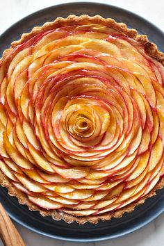

Ingredients
Here are the ingredients to prepare an apple tart.
1 shortcrust pastry
4 apples
100 g of sugar
50 g of butter
1 egg (for glazing)
Steps

Steps
Follow these steps to prepare your dish.
Preheat the oven to 180 °C (350 °F).
Roll out the pastry in a tart pan.
Peel and slice the apples. Arrange them on the pastry.
Sprinkle with sugar and dot with small pieces of butter.
Beat the egg and brush it over the pastry. Bake for 30-35 minutes.